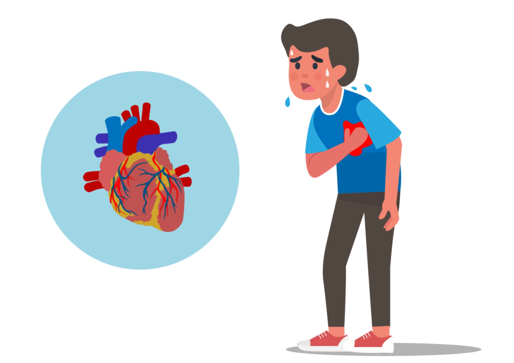
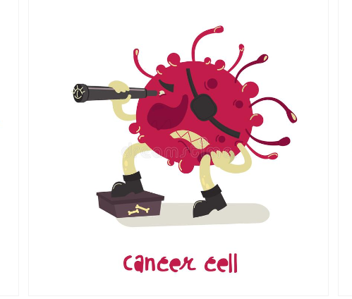
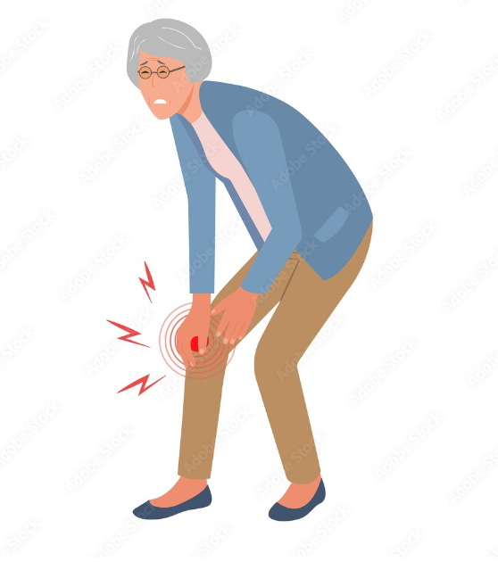
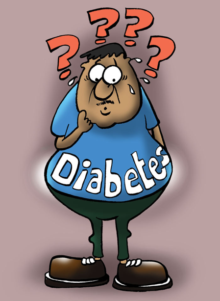
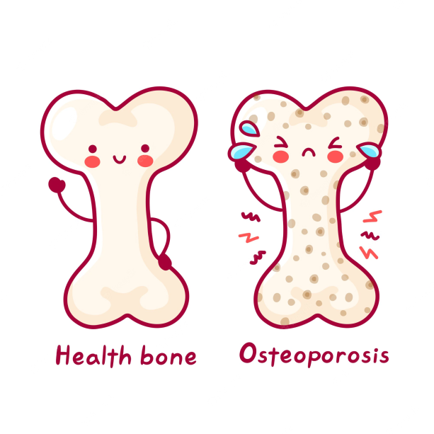
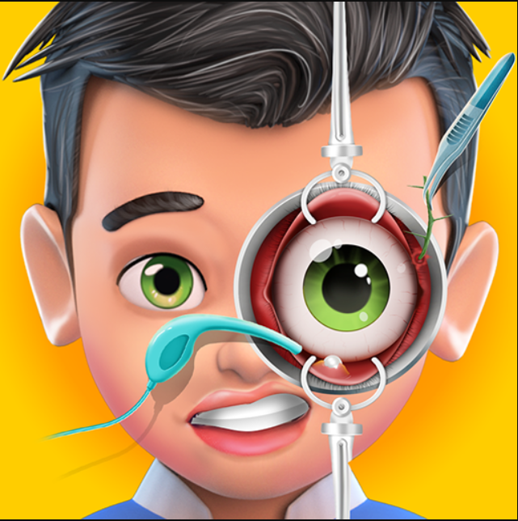
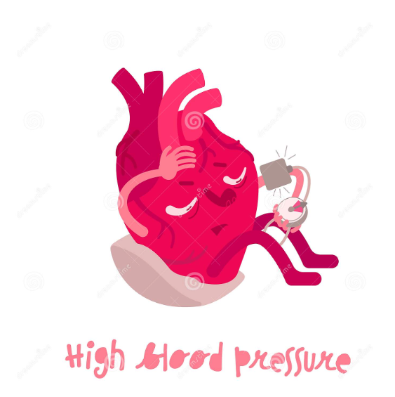

Sahaayak by Topaz 9B DPSH 2022
Everything you need to know about common health issues people experience and how you cure them. Please Don Not Hesitate to ask us your queries on the Discord Server On The Follow Us Page & receive responses within 24 hours!!! Please give us your opinions and feedbacks in the Discord Server as well.
Welcome To Health App By Topaz 9B DPSH 2022. "PLEASE CLICK THE IMAGES RELATED TO THE RESPECTIVE DISEASE TO LEARN MORE ABOUT THEM" . In case of any issues, please reload the page by pressing Ctrl+R. Make sure to follow us and give us hints and tips on improving our apps. Thank You , Stay Safe , Stay Healthy & Stay Happy.

Heart Attack:
- Definition: A blockage of blood flow to the heart muscle.A heart attack usually occurs when a blood clot blocks blood flow to the heart as Without blood, tissue loses oxygen and dies.
- Symptoms: Symptoms include tightness or pain in the chest, neck, back or arms, as well as fatigue, lightheadedness, abnormal heartbeat and anxiety.
- Cures: Lifestyle Changes,Cardiac Rehabilitation,Meditation,Stents,Bypass Surgery,Safe Sweets and Fats,Avoiding Drinking and Smoking.

Cancer:
- Cancers: Cancer is a disease in which abnormal cells divide uncontrollably and destroy body tissue. More than half of the cancer diagnosis is given to
adults above 65 years. Some cancers such as colon or breast
cancer can be detected early and ultimately treated from an
earlier stage, while lung cancer is difficult to detect and it’s
treatment can become more complicated.Treatments may include surgery, chemotherapy and radiation therapy.

Arthritis:
- Inflammation of one or more joints, causing pain and stiffness that can worsen with age. It is common to associate arthritis with old age.
Intense pain in your joints, decreased flexibility, tenderness
or swelling in more than one joint are all early signs of
arthritis. Symtoms include Medication, physiotherapy, controlling blood sugar, exercising or sometimes surgery that help reduce symptoms and improve quality of life.

Diabetes:
- Diabetes includes a group of diseases that result in too much sugar in the blood (high blood glucose).
- Diabetes is very prevalent in the older population.
If left untreated and or managed poorly, it can affect other
parts of your body causing serious medical conditions. Here
are some tips to stay healthy with diabetes.
- You can prevent or delay diabetes by reducing unnecessary fats and sugar and regularly exercise.

Osteoporosis:
- Osteoporosis: A condition where bones become weak & brittle.
- The body constantly absorbs and replaces bone tissue.With osteoporosis,new bone creation doesn't keep up with old bone removal.
- Treatment includes medication,a healthy diet and weight-bearing exercise to help prevent bone loss or strengthen already weak bones.

Cataract:
- Cataract is the clouding of the normally clear lens of the eye that increases with age.Research has shown that eating foods that contain the healthy vitamins C and E, and lutein and zeaxanthin, may reduce your risk of cataracts. Additionally, if you already have cataracts, these vitamins and nutrients may slow their progression.

Hypertension OR High Blood Pressure:
- High blood pressure, also called hypertension, is blood pressure that is higher than normal.Most of the humans who are 40 and above have a high chance of experiencing this as it increases with age.Usually hypertension is defined as blood pressure above 140/90, and is considered severe if the pressure is above 180/120.Eating a healthier diet with less salt, exercising regularly and taking medication can help lower blood pressure.